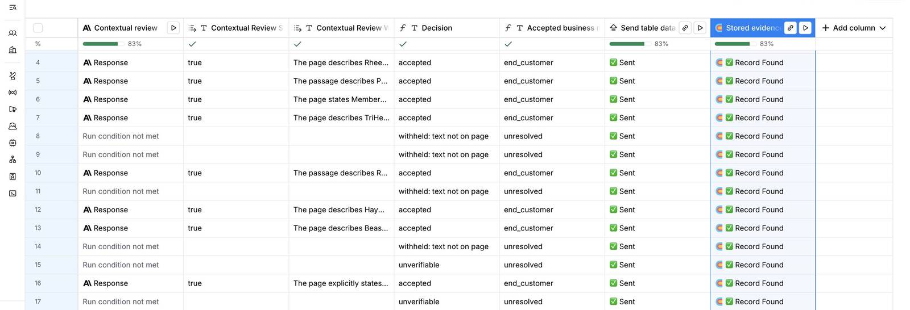

One account, from proposal to decision
Loading the accounts.
The 50
Every company was also labelled by a separate reference review that read its own pages. Here is how many labels would have been accepted, and how many of those were wrong, at each step.
How it runs in Clay
One workbook, three tables. Accounts does the work and writes each decision to Evidence; a lookup reads it back. Adversarial fixtures runs the same checks on five made-up cases built to fail.


Five cases built to fail
Made-up companies on test pages, labelled as fixtures, never mixed into the 50.
The quote-check column (HTTP API)
The key lives in a saved Clay header account, never in the column or a template. The endpoint only fetches domains on its list, re-checks every redirect, caps time and size, and allows 30 checks a minute per IP. It calls no model.
The decision policy
Accepted only if the quote is on the cited page of the company's own website and the review, reading the passage in context, agrees it shows the business model. Otherwise the company stays unresolved, never an end customer by default. Pages that cannot be read are unverifiable, not inventions.
Full account qualification was not assessed: this checks one thing, what the company sells.
How the 50 were picked
What this does not prove
A quote on a page proves the words are there, not that they are true. The review is another model and can agree with a weak passage. The reference labels are a careful reading, not ground truth: a few companies are genuinely mixed. It ran on a Clay trial workspace, on 50 companies I picked, not on your list.